About the Site
This website is a collection of my hopes and my joys,
a place to document what I love and am grateful for.
It can be easy to overlook the little things in life
that we should be just as grateful for as the big things.
Creative expression can be such a good way, at least for me,
to remind myself of how lucky I am to have so many things in
my life that bring a smile to my face. This website takes
the form of an interactive journal of sorts, a way for me to
experiment artistically and place emphasis on the beauty I see
all around me. So take a moment to look around, I hope it will
inspire you to pause and be thankful for the present, because
it's pretty good.
Writing Credits: Amelia Gorman, Entries 2,3,4

Site Created by Elle Hebert in 2022, Parsons School of Design Core 1: Interaction